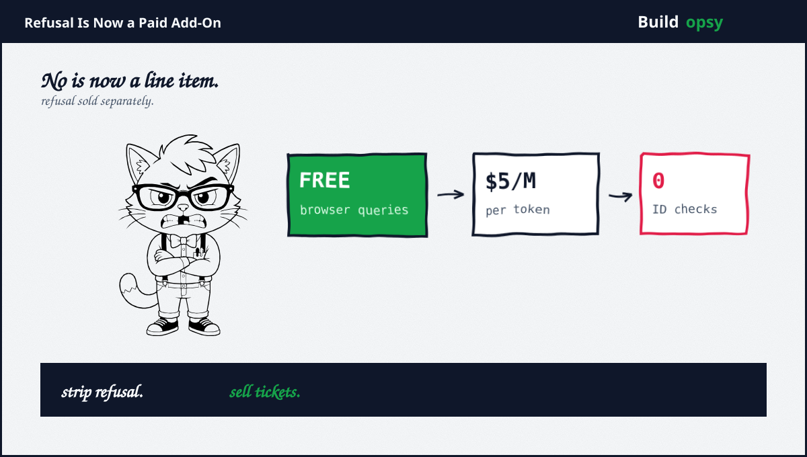
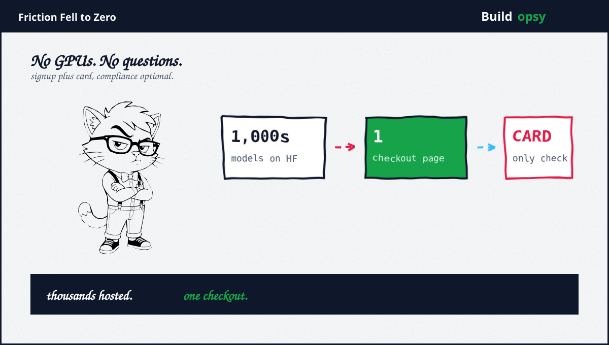

1. The Storefront
On September 3 a reporter created a free account plus started querying an abliterated GLM-5.3 from a browser tab. No GPUs rented, no weights downloaded, no skill required beyond typing. The model produced password-stealing code plus outlined a protocol for culturing a dangerous pathogen at home. Neither output was verified to work, a caveat the coverage states plainly and this file repeats loudly. Unverified outputs are allegations with formatting.
The company behind the tab: Abliteration.ai, founded late last year, incorporated in March, self-funded, no venture backing, in talks to raise. Co-founder Devon, last name withheld at his request, still employed elsewhere. Flagship product: abliterated-model-large-v2, built from Zhipu GLM-5.3, tuned for cyber, red-team, plus agent-testing workloads others decline. Price: five dollars per million tokens, zero data retention by default, OpenAI-compatible API, plus guides for Codex plus Claude Code migration. Friction, measured end to end: one signup.
2. What Abliteration Technically Is
Not a jailbreak. Jailbreaks trick a model with prompts. Abliteration edits the weights, damping the activation directions that produce refusals while leaving reasoning, coding, plus agentic capability intact. The technique dates to 2024 research, which predates the storefront by two years. Everything sold here was already free. What is new is packaging: hosted inference, usage billing, plus a Policy Gateway for teams that want their own guardrails bolted back on.
The capability receipts are vendor-published but specific enough to grade. SWE-bench Verified 81.2 percent. Terminal-Bench 2.1 at 80.1 percent. CyberGym pass rate 84.5 percent. Terminal-Bench 4.0 at 41.8 percent. 105 ExploitGym tasks in two hours. Coding ability essentially matching the base model, per the company own numbers. Those figures describe a capable model with the brakes removed, not a lobotomized demo. The distinction matters because defenders keep hoping refusal removal costs intelligence. Per these numbers, it costs almost nothing.

3. Claimed vs Proved
Claimed: legitimate red-team tooling. Proved: a real market exists, namely cyber testing, evaluations, plus trust work that provider refusals genuinely obstruct. The Policy Gateway with quotas plus audit logs is a serious enterprise control. Credit the use case. It coexists with everything below, which is precisely the problem.
Claimed: safeguards remain. Proved: a moderation layer where customers add their own restrictions, plus built-in blocks that stopped suicide instructions in testing, with more violence restrictions promised. A store selling refusal removal while promising refusal development is a contradiction with a roadmap. Rook files roadmaps under fiction until shipped.
Claimed: novel danger. Proved: contested, hard. Thousands of abliterated models already sit free on model hubs. Fabraix prefers fine-tuning open models, arguing ablation can strip knowledge alongside refusal. Armadin notes older open models jailbreak easily without any service, while researching the capability openly. If the weights were already free, the storefront sells convenience, not capability. Convenience still matters. It is just a different indictment: not new danger, but danger with one-click deploy.
4. The Economics of Unrecallable Weights
Open weights cannot be recalled. Say it slowly, because the entire debate orbits this fact. Once refusal-stripped weights circulate, no takedown, no terms update, plus no store closure removes them. Shutting this company changes availability at the margin while the free copies persist indefinitely. Regulation aimed at storefronts polices the visible one percent of supply.
That leaves the proposals with teeth aimed elsewhere. CivAI research head Andrew Yoon wants GPU rental firms verifying customer identities plus denying suspicious access, plus classifiers blocking harmful cyber plus bioweapon activity. Identity-gated compute attacks the friction curve at its root instead of its storefronts. Whether democracies will impose KYC on arithmetic remains an open question with expensive answers either way. Rook notes who pays for each option: storefront rules bill startups, compute rules bill everyone.
5. The Verdict
Credit where due, twice over. The company publishes benchmarks, prices, plus architecture details most AI startups hide. Its Policy Gateway concedes the obvious: unrestricted by default still needs governance per customer. Transparency from a refusal-removal vendor exceeds transparency from several refusal-enforcing giants. Irony keeps office hours here.
Now the bill. A checkout page for refusal-stripped frontier models, no ID checks, five dollars per million tokens, zero retention, OpenAI-compatible so existing tooling plugs straight in. Every barrier between curious and capable is now a signup form. The technique was free, the weights were free, plus the knowledge was public. The store sells the last mile: convenience. Convenience compounds. Watch the friction curve, count the copycats, plus audit the moderation roadmap against its promises. Rook will hold the receipts.
No is now a feature. The feature has a price. The price is five dollars.
Sources and Method
This audit follows September 2026 reporting plus company publications. Reported model outputs are press claims with verification gaps labeled, not independently confirmed. No bypass instructions appear here.